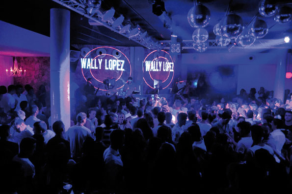
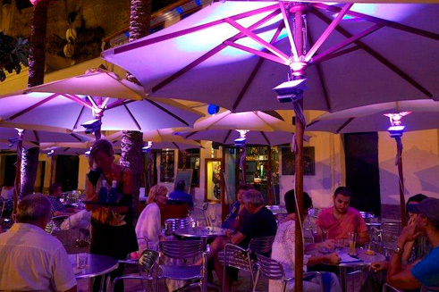
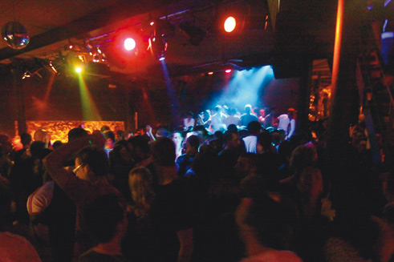

МЕНОРКА, неповторимая и днем, и ночью
Красота Менорки ослепляет не только при свете дня, но и ночью. Когда солнце опускается за горизонт, просыпается словно другой остров, на котором кипит жизнь. Но забудьте о больших клубах и дискотеках. Ночной жизни этого кусочка земли присущ свой собственный стиль – сбалансированный и гармоничный.
Если после ужина у вас есть желание узнать эту сторону острова, советуем отправиться в порты Сьютаделы (puerto de Ciutadella) или Маона (puerto de Maó). Это, бесспорно, главные центры ночной жизни Менорки, где вы найдете все от атмосферы chill-out до музыкальных баров разного типа.
Незабываемые впечатления вы получите, посетив Кова ден Чорой (Cova den Xoroi) – натуральный грот, расположенный в скале над морем. Находится это место в районе Кала эн Портер (Cala en Porter). В нем, как гласит легенда, разворачивалась трагическая история любви загадочного мореплавателя по имени Чорой и красавицы-меноркинки. Сейчас это уникальная в своем роде дискотека с потрясающим видом на скалы и море. Здесь можно насладиться аперитивом в течение дня, слушая спокойную музыку, полюбоваться закатом, а когда луна придет на смену солнцу, потанцевать под лучшие сеты знаменитых ди-джеев.
Как видите, и ночью Менорка уникальна и неповторима. Такая она, Менорка.